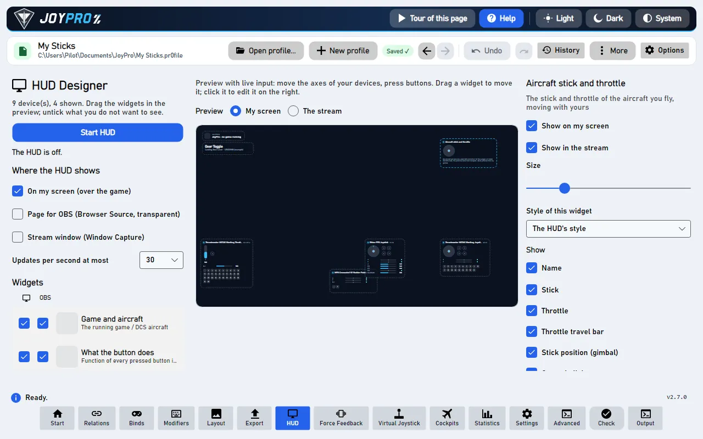

#Пераключыць аверлэй
Кнопкаапісана«Запусціць HUD» / «Спыніць HUD»: запускае HUD з вывадамі, адзначанымі вышэй: пры патрэбе чытае прылады, знаходзіць запушчаную гульню і загружае яе прывязкі.
Пры паўторным націску закрывае ўсе вывады.
HUD паказвае вашы прылады на экране падчас гульні, як аверлэй кантролера ў стрымераў: малюнак ручкі кіравання нахіляецца разам з вашай ручкай, рычагі і восі рухаюцца як палоскі, утрыманыя кнопкі падсвечваюцца са сваімі назвамі, а радок кажа, што робіць націснутая кнопка ў запушчанай гульні («Gear Toggle»). Ён можа паказвацца паверх гульні, у OBS або і там, і там, кожны раз са сваімі віджэтамі. Гэтая старонка — яго канструктар.


flowchart LR D["Вашы прылады"] --> P["HUD"] O["Вашы прывязкі<br/>у гульні"] --> P P --> S["На маім экране"] P --> B["Старонка для OBS"] P --> W["Акно для стрыма"]
Спыніць HUD (тая ж кнопка) закрывае яго. Усё, што вы тут наладзілі, захоўваецца і ёсць зноў пасля перазапуску.
Перацягніце віджэт у папярэднім праглядзе, каб перамясціць яго; націсніце на яго, каб змяніць яго справа. Размясціць аўтаматычна ставіць іх уздоўж нізу: РУД і прылады для левай рукі злева, педалі пасярэдзіне, ручка кіравання для правай рукі справа.


Акно HUD празрыстае і застаецца паверх гульняў у акне і ў акне без рамкі. Націскі мышы праходзяць праз яго ў гульню. Яго няма на панэлі задач і ў Alt+Tab. Эксклюзіўны поўнаэкранны рэжым хавае яго (абмежаванне Windows): пераключыце гульню ў рэжым акна без рамкі. Радок націснутай кнопкі называе дзеянне гэтай гульні і лятальнага апарата, напрыклад «Weapon Release» у F-16C і «Fire guns» у IL-2.
Тры вывады не залежаць адзін ад аднаго:
| Вывад | Для каго | Як |
|---|---|---|
| На маім экране (паверх гульні) | вы | празрыстае акно паверх гульні |
| Старонка для OBS (крыніца «Браўзер», празрыстая) | ваш стрым (рэкамендуецца) | JoyPro аддае старонку толькі на гэтым ПК; Капіяваць змяшчае яе адрас у буфер абмену |
| Акно для стрыму («Захоп акна») | стрымы з «Захопам акна» | звычайнае акно (можа быць за гульнёй) з празрыстым фонам або фонам для храмакея |
Зніміце сцяжок На маім экране, каб гуляць з чыстым экранам, пакуль стрым па-ранейшаму паказвае HUD, або паказвайце на кожным розныя віджэты: у кожнага віджэта два сцяжкі — манітор (ваш экран) і OBS (стрым). Папярэдні прагляд: Мой экран / Стрым пераключае, што паказвае канструктар. Максімум абнаўленняў у секунду (15, 30 або 60; 30 — плаўна і лёгка).
http://127.0.0.1:8765/hud).Старонка малюе віджэты, адзначаныя для стрыму, у тых жа месцах і стылях, што і праграма, на сцэне 1920 x 1080, маштабаванай да крыніцы. Порт заняты іншай праграмай? Выберыце іншы ў Порт і зноў скапіюйце адрас.


Замест гэтага «Захоп акна»: адзначце Акно для стрыму, выберыце фон (празрысты, зялёны, пурпурны, сіні або свой колер). У OBS дадайце Window Capture з Capture Method: Windows 10 (1903 and up); з колерам дадайце фільтр Chroma Key гэтага колеру. Калі празрысты фон у вашым OBS паказваецца чорным, выкарыстоўвайце крыніцу «Браўзер» або колер.
Як крыніца «Браўзер» у OBS атрымлівае HUD: адна старонка, потым толькі змены.
| # | Хто | Што адбываецца |
|---|---|---|
| 1 | OBS | Крыніца «Браўзер» адкрывае http://127.0.0.1:8765/hud. |
| 2 | JoyPro | Адпраўляе старонку: макет, стылі і малюнкі. |
| 3 | OBS | Адкрывае /hud/events. Злучэнне застаецца адкрытым. |
| 4 | JoyPro | Адпраўляе стан (восі, кнопкі, што робіць кнопка) не часцей за 30 разоў у секунду і толькі тады, калі нешта змянілася. |
| 5 | JoyPro | Зноў адпраўляе макет, калі мяняюцца віджэты, месцы або стылі. |
Віджэты пералічвае кожную прыладу, а таксама загаловак, стужку прывязак і віджэт лятальнага апарата. Перазагрузіць прылады зноў чытае падключаныя прылады; Паказаць усе адзначае кожны віджэт для вашага экрана; Размясціць аўтаматычна і Скінуць месцы расстаўляюць іх па месцах.
Для кожнага віджэта (пстрыкніце па ім у папярэднім праглядзе або ў спісе):


Віджэт лятальнага апарата: ручка кіравання, РУД, паласа ходу РУД, становішча ручкі, падсветка элементаў кіравання, утрыманыя элементы па назве; Лятальныя апараты (Аўтаматычна: апарат, на якім вы лятаеце, або любы малюнак, зададзены на гэтым ПК) і Рухаецца разам з (ручка кіравання і РУД, якія яго рухаюць). Яго малюнкі бяруцца з уласных малюнкаў кабін гульні (Кабіны > Стварыць выявы з маіх гульняў, або пакет малюнкаў), інакш са схемы JoyPro сапраўднай рукаяці.
Стыль мае 40 гатовых варыянтаў: Шкло, Неон, Мінімальны, строгія (Матавае шкло, светлы, Стрымер, строгі, Стрымер, яркі, Кампактны, Буйны тэкст, Пастэль, Толькі контуры), дысплеі кабіны (Ваенны HUD, зялёны, MFD, бурштынавы, PFD авіялайнера, Шкляная кабіна, Начное бачанне, Чырвонае падсвятленне кабіны, Вектарны каркас, Рэтра-тэрмінал, Warbird, Галаграма), гульні і жанры (Касмасім, аранжавы, Гола, блакітны, Кіберпанк, Сінтвейв, Неонавы ружовы, Гонкі, Тактычны пясочны, Цёмна-сіні і золата, Стэлс, Прывід), колеравыя тэмы (Арктыка, Пустыня, Акіян, Захад сонца, Каралеўскі, Карбон) і чытальнасць (Высокая кантраснасць, Высокі кантраст, светлы, Монахром, Монахром, светлы). › пераходзіць да наступнага.


Ніжэй: акцэнтныя колеры адной пстрычкай, Акцэнт, Націснута і Непразрыстасць, потым параметры дызайну для кожнага элемента: Карткі (фон, рамка, вуглы, цень), Тэкст (шрыфт, памер, міжлітарная адлегласць, колеры, Тоўстыя назвы), Элемент ручкі (кальцо, квадрат, перакрыжаванне, радар, кропка; памер, свячэнне), Палосы і рычагі (формы, вышыні, пустая частка) і Кнопкі і меткі (формы). Змененая опцыя робіць стыль «Уласны дызайн (зменены)»: Захаваць стыль захоўвае яго пад вашай назвай, Адмяніць змены вяртае да гатовага варыянта, Экспарт стылю... / Імпарт стылю... дзеляцца ім як файлам, Выдаліць выдаляе ваш уласны стыль.
Што робіць кнопка: колькі радкоў, як доўга яны застаюцца (секунды), памер шрыфту, Паказваць прыладу і кнопку і Толькі пакуль працуе гульня. Скрозь пстрык прапускае пстрычкі мышы праз акно HUD (ужываецца пры запуску HUD).
JoyPro знаходзіць запушчаную гульню па яе працэсе (DCS, IL-2, Star Citizen і кожная іншая гульня, з якой ён працуе) і паказвае прывязкі толькі гэтай гульні. DCS яшчэ патрэбны лятальны апарат: выберыце яго ў Лятальны апарат DCS або Усталяваць хук DCS, каб DCS паведамляў JoyPro апарат пры кожным пачатку місіі (невялікі файл Lua плюс адзін абаронены радок у Export.lua, спачатку робіцца рэзервовая копія; Выдаліць вяртае файл байт у байт; спачатку закрыйце DCS). Праверыць паказвае, ці ўсталяваны хук.


Мадэль выгляду: MainWindowViewModel.Hud.cs (прылады, віджэты, размяшчэнне), MainWindowViewModel.HudStyles.cs (гатовыя варыянты, уласныя стылі, імпарт/экспарт), MainWindowViewModel.HudStream.cs (вывады, старонка стрыму, віджэт лятальнага апарата), MainWindowViewModel.HudAxes.cs (восі ручкі), MainWindowViewModel.Overlay.cs (запуск/спыненне, запушчаная гульня, радкі кнопак, хук DCS). Выгляды: Views/HudWindow.axaml, Views/Controls/HudSurface.axaml, HudElements.cs, HudPanel.cs. Гатовыя варыянты: Models/HudStylePresets.cs.
engine hud devices дае для кожнай падключанай прылады мадэль, тып, руку, малюнак прадукту, восі з іх роляй, кнопкі з назвамі і id элементаў (Controls, для віджэта лятальнага апарата) і малюнак раскладкі з пазіцыямі кнопак.engine overlay map (--game, --plane, --unit): прывязаныя кнопкі з мадыфікатарамі і назвамі. Прывязка з мадыфікатарамі паказваецца, пакуль утрымліваюцца яе мадыфікатары; перамагае прывязка з найбольшай колькасцю супадаючых мадыфікатараў.engine overlay dcs-hook status / install / remove (--path, --dry-run): Scripts\JoyProOverlay.lua плюс адзін радок у Export.lua, абгорнуты ў pcall; DCS адпраўляе тып юніта на 127.0.0.1:1992 (UDP). Хук выклікае функцыі экспарту іншых скрыптоў (SRS, Tacview), якія ён замяняе.Services/HudStreamServer.cs, HudStreamHub.cs, Resources/hud-stream.html; прывязаны толькі да 127.0.0.1, запыты з іншым імем хоста адхіляюцца. GET /hud (старонка), /hud/events (Server-Sent Events: layout, state), /hud/img/<id> (малюнкі як PNG), /hud/state (JSON). Без падключанай старонкі ён толькі слухае.Services/HudInputPump.cs захоўвае толькі самую новую справаздачу для кожнай прылады і ўжывае іх з выбранай частатой; элементы перамалёўваюцца толькі пры зменах; на кожную справаздачу нічога не вылучаецца ў памяці; малюнкі выразаюцца адзін раз (рукаяці апаратаў вышынёй 480 px). Вымяраецца доўгім тэстам HUD па бюджэтах працэсара, вылучэння і памяці.%APPDATA%\JoyPro2\hud.json (месцы, памеры, сцяжкі віджэтаў для экрана і стрыму, стыль з усімі параметрамі, уласныя стылі, вывады, порт, фон, частата абнаўлення). Файлы стыляў: *.joypro-hudstyle.json ("format": "joypro-hud-style").Даведка: hud.
Дакументацыя функцый за гэтай старонкай, створаная з рэпазіторыя:
42 элементаў кіравання, прачытаных з зыходнага кода праграмы: 42 апісана, 0 з фактамі з кода (падказка, каментарый у кодзе, выклік рухавіка), 0 яшчэ трэба дапоўніць.
«Запусціць HUD» / «Спыніць HUD»: запускае HUD з вывадамі, адзначанымі вышэй: пры патрэбе чытае прылады, знаходзіць запушчаную гульню і загружае яе прывязкі.
Пры паўторным націску закрывае ўсе вывады.
Падказка Празрысты HUD паверх гульні. Зніміце птушку, каб ваш экран заставаўся чыстым, а стрым і далей паказваў HUD.
Паказвае HUD як празрыстае акно па-над гульнёй.
Здыміце птушку, каб ваш уласны экран заставаўся чыстым, а стрым па-ранейшаму паказваў HUD.
Падказка JoyPro аддае HUD як вэб-старонку толькі на гэтым ПК. У OBS дадайце крыніцу «Браўзер» з гэтым адрасам: фон празрысты, уласны CSS не патрэбны.
Пакуль HUD працуе, JoyPro аддае яго як вэб-старонку толькі на гэтым ПК для OBS Browser Source: празрысты фон, без уласнага CSS.
Калі адзначана, ніжэй паказваюцца адрас з «Капіяваць» і «Порт».
Капіюе адрас старонкі для OBS у буфер абмену.
У OBS: Sources > + > Browser, устаўце яго як URL, шырыня 1920, вышыня 1080.
Падказка Асобнае акно, не паверх іншых: яно можа знаходзіцца за гульнёй. У OBS: «Захоп акна» з метадам захопу «Windows 10 (1903 і навейшыя)»; пры колеры хромакея дадайце фільтр «Хромакей».
Пакуль HUD працуе, адкрывае асобнае акно для Window Capture у OBS, з празрыстым фонам або колерам храмакея, выбраным ніжэй.
У OBS: спосаб захопу Windows 10 і фільтр Chroma Key для колеру.
Птушка манітора ў віджэта ў спісе: паказвае яго на вашым экране.
Птушка OBS у віджэта ў спісе: паказвае яго ў стрыме.
Зноў чытае падключаныя прылады: новыя прылады атрымліваюць віджэт, малюнкі і назвы кнопак абнаўляюцца.
Выкарыстоўвайце пасля падключэння прылады.
Адзначае ўсе віджэты для вашага экрана. Здыміце птушкі ў спісе з тых, якія вам не патрэбны.
Падказка РУД і левая рука злева, педалі пасярэдзіне, ручка правай рукі справа, уздоўж ніза
Размяшчае віджэты прылад, паказаныя на вашым экране, уздоўж ніжняга краю: РУД і прылады для левай рукі злева, педалі пасярэдзіне, ручку кіравання для правай рукі справа; тое, што не змяшчаецца, ідзе на радок вышэй.
Новыя месцы захоўваюцца.
Вяртае кожны віджэт на месца і ў памер па змаўчанні; тое, што паказвае кожны віджэт, застаецца.
Падказка Наступны стыль
Пераключае HUD на наступны пункт спіса «Стыль».
Дае стылю гэты акцэнтны колер. HUD адразу яго прымае; стыль паказваецца як «уласны дызайн», пакуль вы яго не захаваеце.
Паказвае назвы віджэтаў тлустым шрыфтам. Частка стылю: мяняе яго на «уласны дызайн», пакуль не захаваеце.
Захоўвае цяперашні дызайн як ваш уласны стыль пад назвай, уведзенай побач, і робіць яго стылем HUD.
Назва гатовага стылю не прымаецца; ваш стыль з такой жа назвай замяняецца.
Чытае файл стылю і робіць яго адным з вашых стыляў і стылем HUD.
Назва, якую вы ўжо выкарыстоўваеце, атрымлівае нумар.
Захоўвае цяперашні дызайн як файл стылю, каб падзяліцца ім або захаваць; HUD не змяняецца.
Падказка Вярнуцца да стылю, выбранага вышэй
Вяртае дызайн да стылю, які быў да ручных змен: апошняга выбранага, захаванага або імпартаванага стылю.
Выдаляе выбраны ўласны стыль. Віджэты, якія яго выкарыстоўвалі, вяртаюцца да стылю HUD; HUD захоўвае свой цяперашні выгляд.
Дадае прыладу і кнопку пад кожны радок «Што робіць кнопка».
Паказвае радкі «Што робіць кнопка» толькі пакуль працуе падтрыманая гульня; калі выключана, яны паказваюцца і на працоўным стале.
Пстрычкі мышы праходзяць праз акно HUD у гульню.
Ужываецца пры запуску HUD: пасля змены спыніце і зноў запусціце яго.
Усталёўвае хук DCS: Scripts\JoyProOverlay.lua і адзін абаронены радок у Export.lua.
Спачатку закрыйце DCS.
Зноў выдаляе хук DCS: Export.lua байт у байт такі, як раней.
Спачатку закрыйце DCS.
«Мой экран» / «Стрым»: што паказвае папярэдні прагляд канструктара — віджэты, адзначаныя для вашага экрана, або адзначаныя для стрыму.
Змяняецца толькі папярэдні прагляд; выбар захоўваецца для наступнага запуску.
Паказвае выбраны віджэт на вашым экране.
Паказвае выбраны віджэт у стрыме: на старонцы для OBS і ў акне стрыму.
Паказвае назву прылады на яе віджэце.
Віджэт загалоўка гульні: паказвае малюнак гульні або лятальнага апарата DCS побач з яго назвай.
Паказвае тып прылады пад яе назвай.
Паказвае малюнак прылады.
Нахіляе і паварочвае малюнак прылады разам з ручкай кіравання, як быццам рухаецца сапраўдная ручка.
Віджэт прылады: утрыманыя кнопкі падсвечваюцца. Віджэт лятальнага апарата: элемент кіравання лятальнага апарата, які адпавядае вашай націснутай кнопцы, падсвечваецца на яго ручцы кіравання або РУД.
Віджэт прылады: утрыманыя кнопкі паказваюцца як плашкі з назвамі з каталога прылад.
Віджэт лятальнага апарата: утрыманыя элементы кіравання лятальнага апарата па назве пад рукаяцямі.
Віджэт прылады: кожная вось і рычаг рухаюцца як паласа.
Віджэт лятальнага апарата: паласа побач з РУД са становішчам вашага рычага.
Піша назву кожнай восі побач з яе паласой.
Піша значэнне кожнай восі побач з яе паласой.
Паказвае элемент ручкі кіравання: кропку ў кальцы ў становішчы ручкі, з рыскай для павароту.
Паказвае Hat; націснуты напрамак падсвечваецца.
Віджэт лятальнага апарата: паказвае малюнак уласнай ручкі кіравання лятальнага апарата, які нахіляецца разам з вашай ручкай.
Віджэт лятальнага апарата: паказвае малюнак уласнага РУД лятальнага апарата, які рухаецца разам з першым рычагом вашага РУД.